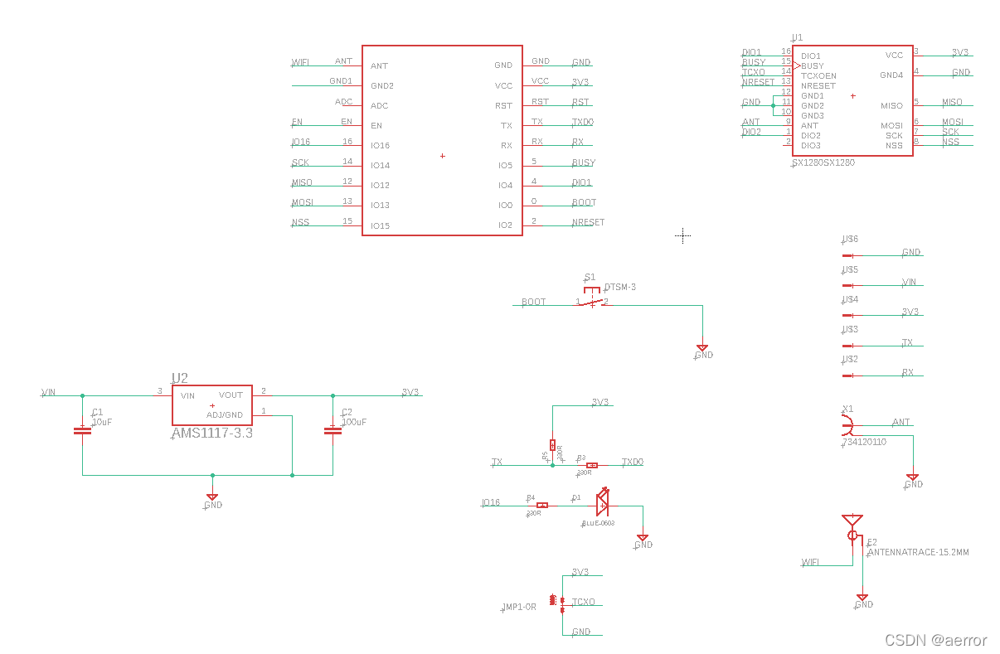
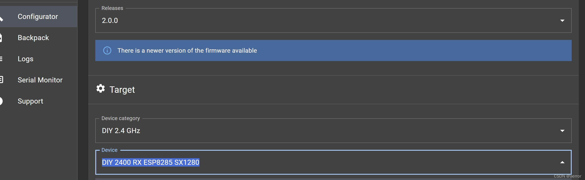
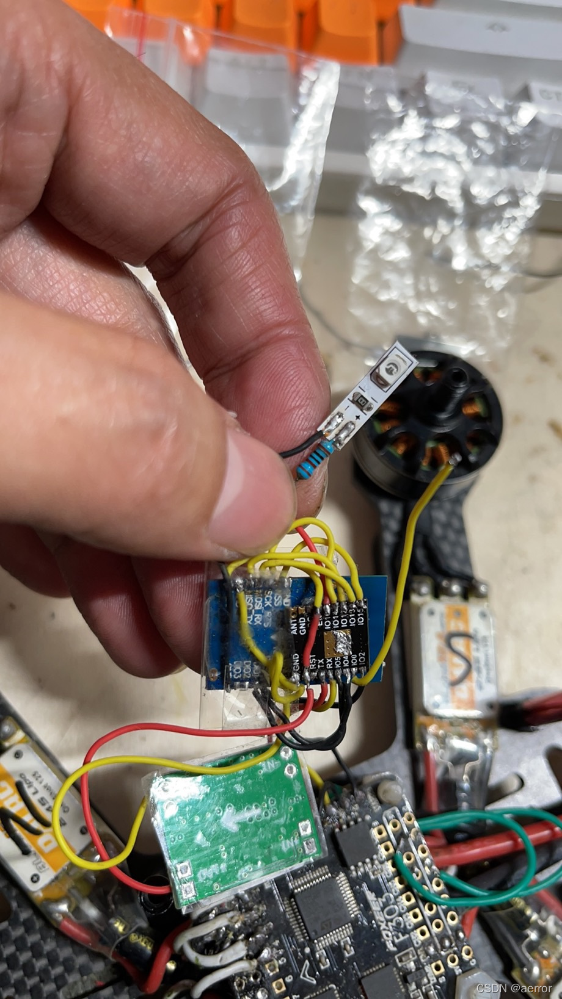
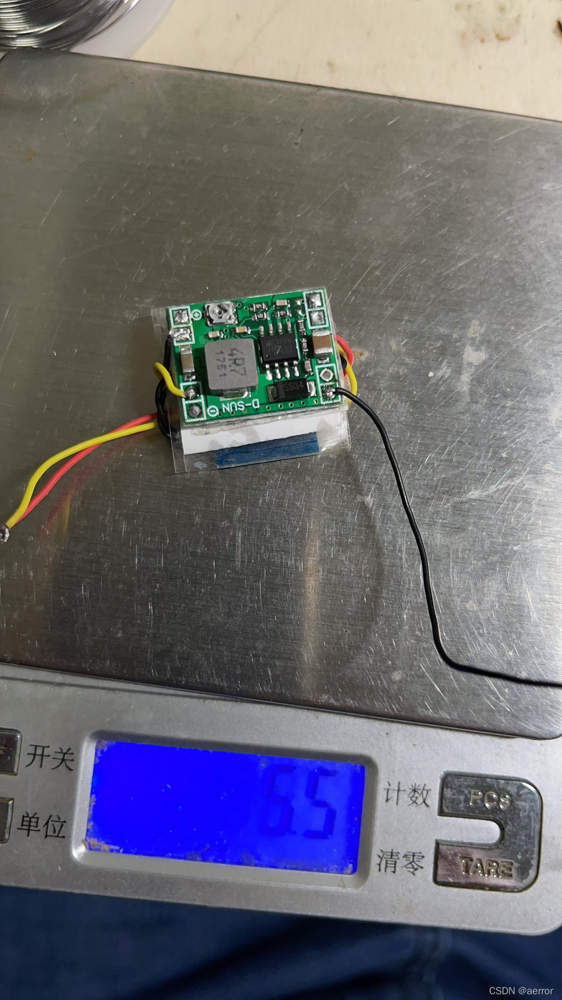

制作难度：中等，主要是器件太小，焊接需要耐心
一。硬件材料
1.LoRa射频模块，sx1280 ： E28-2G4M12S
2.MCU Wifi模块：ESP-01F
3.各色硅胶软线若干
4.1k电阻
5. TTL转串口 CH341 （ CH340或FTDI随便一个即可。）
6. DC-DC3.3v降压模块
7. LED灯一个。
二。软件：
1. EpressLRS Configurator https://github.com/ExpressLRS/ExpressLRS-Configurator
三。RX电路图

四。制作步骤
1.首先把esp-01f的RST, BOOT(IO0）接两条线出来，RST是用来接地重启，BOOT的话用来刷ELRS的固件时要接地，
2. 把ESP-01F的 TX, RX, VCC, GND，连接到CH341的RX,TX, 3.3V和GND，连接上电脑，没有CH341驱动的安装 一下驱动，百度或者问卖家要驱动。
3. 使用 EpressLRS Configurator刷固件，Device选：DIY 2400 RX ESP8285 SX1280，记得在刷的时候把boot线接地，然后”Build And flash", 不成功的话，可以用RST接地重启一下ESP-01F。

刷好就可以把ESP-01F和CH341的接线断开了。
4.按“三。RX电路图”用线把E28-2G4M12S和ESP-01F接上，加电阻接上LED灯，2G4M12S没有TCX0EN，不用接就好了。
5. 把VCC和GND接到DC-DC模块的3.3V输出， 降压模块要求波纹小于20mv
6.接好线了如图：

7. 留出GND, VCC, TX,RX， 用胶带把三个模块叠起来，即可，重量控制还不错，只有5G:
